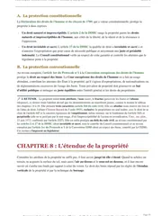

L'arrêt du 7 juin 1990 sur l'empiétement, expliqué simplement
L'arrêt du 7 juin 1990, rendu par la troisième chambre civile de la Cour de cassation, pose une règle stricte du droit des biens. Un propriétaire peut toujours exiger la démolition d'une construction qui déborde sur son terrain, même de quelques centimètres, et le juge ne peut pas lui reprocher un abus. En cas pratique, cette règle se distingue des troubles de voisinage, où le juge mesure au contraire la gravité du trouble.

L'essentiel de l'arrêt du 7 juin 1990
Le 7 juin 1990, la troisième chambre civile de la Cour de cassation (pourvoi n° 88-16.277) fixe une règle stricte du droit des biens. Elle porte sur l'empiétement, c'est-à-dire le cas d'une construction voisine qui déborde sur un terrain. Le propriétaire de ce terrain peut alors exiger la démolition de la partie qui dépasse, même si elle ne mesure que quelques centimètres et même si la démolition coûte cher à celui qui l'a construite. Le juge doit donc ordonner cette sanction, quelle que soit la faible gravité de l'empiétement.
Cette règle repose sur l'article 545 du Code civil. D'après ce texte, nul ne peut être contraint de céder sa propriété, sauf pour cause d'utilité publique et moyennant une juste et préalable indemnité. La Cour de cassation en déduit donc que le juge ne peut pas comparer la gravité de l'empiétement et le coût de la démolition pour trancher. Il fait pourtant cette comparaison dans d'autres domaines du droit des biens, comme les troubles de voisinage.
D'abord, l'arrêt permet au propriétaire de défendre son terrain contre n'importe quel empiétement, aussi réduit soit-il. Ensuite, il interdit au juge d'adapter la sanction selon la gravité de l'atteinte ou selon ce que la démolition coûtera au voisin qui a mal construit.
Les époux X font construire une canalisation d'évacuation des eaux usées sur le terrain qui appartient aujourd'hui à M. Y, sans opposition des propriétaires de l'époque.
La cour d'appel de Bastia refuse la suppression de la canalisation demandée par M. Y, parce qu'il ne subit aucune gêne et que le déplacement causerait un dommage considérable aux époux X.
La Cour de cassation casse l'arrêt de Bastia. Pour elle, le propriétaire qui défend son terrain contre un empiétement ne commet jamais d'abus.
La Cour de cassation applique toujours la règle à l'empiétement sur la pleine propriété, y compris pour un débord de quelques centimètres.

Fiche complète
Droit des biens L2
Les faits, une canalisation posée sur le terrain voisin
Les époux X font construire une canalisation d'évacuation des eaux usées, c'est-à-dire un tuyau qui emmène les eaux sales vers l'égout ou une fosse. M. X réalise les travaux, mais la canalisation passe sur un terrain qui ne leur appartient pas. Ce terrain appartient aujourd'hui à M. Y. Au moment des travaux, il appartenait encore à ses auteurs, c'est-à-dire aux anciens propriétaires dont M. Y tient ses droits, par exemple un vendeur ou un parent dont il a hérité.
Juridiquement, la canalisation constitue un empiétement, c'est-à-dire un ouvrage installé sans droit sur le terrain d'autrui. Selon la cour d'appel, les anciens propriétaires ne s'y étaient pas opposés pendant les travaux. M. Y, devenu propriétaire, demande pourtant en justice la suppression de la canalisation construite chez lui.
L'arrêt reste muet sur la date des travaux et sur la longueur de la canalisation. Il ne dit pas non plus comment M. Y est devenu propriétaire. En effet, la décision de la Cour de cassation tient en quelques lignes, et elle reprend seulement les faits retenus par la cour d'appel. Cette rubrique s'en tient donc à ces faits.
La procédure, de Bastia à la Cour de cassation
Le jugement de première instance n'est pas reproduit dans l'arrêt. On sait seulement que l'affaire arrive devant la cour d'appel de Bastia, qui statue le 28 avril 1988 et déboute M. Y, c'est-à-dire qu'elle rejette sa demande de suppression de la canalisation.
M. Y forme alors un pourvoi en cassation, c'est-à-dire un recours qui demande à la Cour de cassation de vérifier si la cour d'appel a bien appliqué la loi. La troisième chambre civile examine l'affaire et rend son arrêt le 7 juin 1990. Elle casse l'arrêt de Bastia dans toutes ses dispositions et renvoie l'affaire devant la cour d'appel d'Aix-en-Provence, qui doit la juger de nouveau.
Les arguments des parties, le droit de propriété ou l'abus de droit
L'arrêt publié ne reproduit pas le moyen de M. Y, c'est-à-dire l'argument qu'il présente contre l'arrêt de Bastia. Le visa de l'arrêt, qui cite l'article 545 du Code civil, montre toutefois sur quel terrain la discussion se place. Selon ce texte, nul ne peut être contraint de céder sa propriété, sauf pour cause d'utilité publique. La cassation prononcée sur ce seul texte indique donc que, pour M. Y, laisser la canalisation en place revenait à l'obliger à abandonner aux époux X une partie de son terrain, alors qu'aucun intérêt public ne le justifie. Il demandait par conséquent la suppression de l'ouvrage, sans avoir à prouver une gêne.
La cour d'appel de Bastia avait au contraire donné raison aux époux X avec trois motifs. D'abord, elle relève que les travaux de M. X avaient nécessairement été faits sans opposition des anciens propriétaires du terrain. Ensuite, elle constate que déplacer la canalisation causerait aux époux X un « dommage considérable ». Enfin, elle note que M. Y ne subit aucune gêne du fait de cette canalisation.
De ces trois éléments, la cour d'appel tire une conséquence juridique. Selon elle, la demande de M. Y ne correspond à aucun intérêt légitime et elle est inspirée par un « sentiment malicieux », c'est-à-dire par l'envie de nuire aux voisins. Elle constitue donc un abus de droit, c'est-à-dire l'usage d'un droit dans le seul but de nuire à autrui. Pour la cour d'appel, un propriétaire qui exige un chantier coûteux chez ses voisins, alors qu'il ne perd rien, sort de l'usage normal de son droit de propriété.
Le problème de droit
La Cour de cassation doit répondre à la question suivante. Le juge peut-il refuser la démolition d'un ouvrage qui empiète sur le terrain d'autrui, au motif que cet empiétement est minime et que la démolition causerait un dommage disproportionné à son auteur ?
La solution de la Cour de cassation
La Cour de cassation répond non, dans une formule courte. Tu peux l'apprendre mot pour mot, car tu la cites dans presque tous les cas pratiques de droit des biens qui parlent d'empiétement.
Le considérant de principe
« La défense du droit de propriété contre un empiétement ne saurait dégénérer en abus. »Cass. civ. 3e, 7 juin 1990, n° 88-16.277
La Cour de cassation casse l'arrêt de la cour d'appel de Bastia au visa de l'article 545 du Code civil, c'est-à-dire en s'appuyant sur ce texte. Elle renvoie ensuite l'affaire devant la cour d'appel d'Aix-en-Provence.
Le propriétaire qui demande la démolition d'un ouvrage qui empiète exerce donc toujours son droit normalement. Peu importe qu'il n'en tire aucun profit réel ou que la démolition coûte cher à celui qui a construit sans vérifier la limite exacte de son terrain.
Le sens du raisonnement
Un abus de droit existe quand une personne utilise son droit seulement pour nuire à autrui, sans en retirer un intérêt sérieux pour elle-même. Or la cour d'appel de Bastia reprochait justement cet abus à M. Y, puisqu'il demandait une démolition coûteuse alors qu'il ne subissait presque aucune gêne.
La Cour de cassation refuse ce raisonnement en s'appuyant sur l'article 545 du Code civil, selon lequel nul ne peut être contraint de céder sa propriété. Ce texte complète l'article 544, qui fait de la propriété un droit absolu, c'est-à-dire le droit de jouir de son bien et d'en disposer de la façon la plus complète. Si la canalisation reste chez M. Y, il est donc forcé de céder une partie de son terrain aux époux X. Pour la Cour, le propriétaire qui défend ainsi son terrain contre un empiétement ne commet jamais d'abus, même quand l'atteinte est très faible.
Autrement dit, pour obtenir la démolition, le propriétaire prouve seulement que la construction dépasse la limite de son terrain. Cette solution s'oppose d'ailleurs à la théorie des troubles anormaux de voisinage posée par l'arrêt du 19 novembre 1986, où le juge évalue au contraire la gravité concrète du trouble avant de sanctionner.
Tu révises ton droit des biens ?
Mon guide « Réviser le droit sans s'épuiser » est gratuit. Il explique la méthode que suivent mes élèves pour retenir les grands arrêts au fil du semestre, bien avant la veille du partiel.
L'arrêt du 7 juin 1990 est-il toujours d'actualité ?
Oui, la Cour de cassation applique toujours cette règle à l'empiétement sur la pleine propriété, c'est-à-dire quand le voisin est propriétaire à part entière du terrain touché, avec tous les droits qui vont avec. La règle existait d'ailleurs avant 1990, puisque la Cour de cassation avait déjà affirmé dès 1823 que la défense de la propriété contre un empiétement ne peut jamais dégénérer en abus. L'arrêt de 1990 reprend donc cette solution ancienne, et les arrêts suivants la maintiennent.
La Cour l'a ensuite confirmée le 20 mars 2002, pour un empiétement mesuré à un demi-centimètre. Elle l'a encore confirmée le 9 juillet 2020 (pourvoi n° 18-11.940), en rappelant qu'un défendeur ne peut pas invoquer le principe de proportionnalité pour contester l'existence d'un empiétement, quel que soit le fondement qu'il avance.
Un arrêt de 2019 nuance pourtant la règle pour les servitudes. Le 19 décembre 2019 (pourvoi n° 18-25.113), la Cour de cassation a en effet jugé que le juge doit vérifier si la démolition porte une atteinte disproportionnée au droit au respect du domicile, protégé par l'article 8 de la Convention européenne des droits de l'homme.
Cette décision concerne cependant un empiétement sur une servitude conventionnelle de passage, c'est-à-dire sur un droit de passer sur le terrain du voisin prévu par un contrat entre eux. Dans l'arrêt de 1990, l'empiétement touchait au contraire la pleine propriété.
La doctrine relève d'ailleurs une tension dans cette différence de traitement, car le juge accepte de contrôler la proportionnalité pour une servitude, qui est un droit réel plus faible, et il la refuse pour la propriété elle-même, qui reste pourtant le droit réel le plus fort.
En pratique, l'empiétement sur la pleine propriété reste donc sanctionné sans marge d'appréciation du juge, comme en 1990 et en 2020. En revanche, depuis 2019, l'empiétement sur une servitude de passage peut faire l'objet d'un contrôle de proportionnalité, pour protéger le droit au domicile.
En cas pratique, il faut aussi connaître deux arrêts rendus le 10 novembre 2016. Dans le premier (pourvoi n° 15-25.113), la Cour de cassation a validé un rabotage de la partie qui empiète, plutôt qu'une démolition totale de l'ouvrage, pour un empiétement réduit à 0,04 m². Dans le second (pourvoi n° 15-19.561), elle a au contraire cassé un arrêt qui avait refusé la démolition d'un débord de toiture de 20 centimètres.
Ainsi, le juge du fond, c'est-à-dire la juridiction qui examine les faits, choisit la manière de réparer l'empiétement. Il peut ordonner de démolir tout l'ouvrage ou seulement de raboter la partie qui dépasse. En revanche, il doit toujours sanctionner l'empiétement.
Ma fiche de droit des biens L2 reprend tout le programme de la matière, de la propriété jusqu'aux démembrements, en passant par la possession.
Dans la même matière, ma fiche sur l'arrêt Trésor du 19 novembre 2002 explique ce qu'est un trésor au sens du Code civil et comment on prouve la propriété d'un bien mobilier.
Pour la servitude de passage évoquée plus haut, mon article sur la distinction entre servitudes continues, discontinues et apparentes explique pourquoi certaines s'acquièrent par trente ans de possession et d'autres jamais.
Enfin, ma fiche sur l'arrêt Maison de la Poésie du 31 octobre 2012 porte sur un autre droit réel. Elle montre jusqu'où les parties peuvent aller, d'un commun accord, pour créer un droit réel que le Code civil ne nomme pas.
La critique doctrinale de cette solution
Les auteurs sont partagés sur cette sévérité. Dans ses observations à la Revue trimestrielle de droit civil de 1991, Frédéric Zenati craint que la solution pousse certains propriétaires à attendre la fin d'un chantier voisin. Ils pourraient alors réclamer une indemnisation excessive en menaçant d'exiger la démolition.
De son côté, William Dross défend une extension de la théorie de l'abus de droit qui permettrait de limiter la démolition dans les cas les plus disproportionnés. De même, une partie de la doctrine, notamment dans le traité de Terré et Simler, propose de réserver une indemnisation aux empiétements négligeables commis de bonne foi, plutôt que d'imposer systématiquement la démolition.
D'autres auteurs saluent au contraire cette solution comme une protection ferme et lisible du droit de propriété. En effet, si le juge pouvait adapter la sanction selon le coût pour l'auteur de l'empiétement, un propriétaire peu scrupuleux aurait intérêt à empiéter d'abord et à négocier ensuite, en misant sur le fait qu'une démolition coûteuse dissuaderait le juge de la prononcer. La règle de 1990 empêche ce calcul, c'est pourquoi ces auteurs la jugent utile malgré sa sévérité.
Comment utiliser cet arrêt dans une copie
Dans un cas pratique. Tu cites cet arrêt dès qu'un énoncé décrit une construction, une clôture ou une plantation qui dépasse sur le terrain du voisin. Tu rappelles alors que la démolition est due même pour un empiétement réduit. Si l'énoncé précise que l'empiétement touche une servitude conventionnelle, la solution de 2019 peut en revanche s'appliquer. Tu vérifies donc toujours quel droit est touché avant de conclure, car les deux situations suivent des règles différentes depuis 2019.
Dans une dissertation sur les limites du droit de propriété. Cet arrêt te sert à montrer que la propriété est un droit absolu, mieux protégé que les autres droits réels comme les servitudes.
Tu peux ensuite l'opposer à l'arrêt Clément-Bayard du 3 août 1915, qui sanctionne au contraire le propriétaire qui utilise son droit seulement pour nuire à son voisin. Les deux arrêts se complètent donc dans un plan, car l'arrêt de 1990 protège le propriétaire contre l'empiétement, alors que Clément-Bayard l'oblige à exercer son droit sans chercher seulement à nuire. La méthode complète se trouve sur ma page sur la fiche d'arrêt et sur celle consacrée à le raisonnement juridique étape par étape.
Les erreurs à éviter avec l'arrêt du 7 juin 1990
- Même minime, un empiétement sur la pleine propriété entraîne la démolition. L'arrêt de 1990 interdit au juge de refuser cette sanction parce que le débord est petit.
- L'empiétement et les troubles anormaux de voisinage suivent deux logiques. Pour les troubles de voisinage, le juge exige un dommage réel et apprécie sa gravité. Pour l'empiétement, il suffit que la limite du terrain soit franchie, sans avoir à prouver un préjudice.
- La solution de 2019 s'applique seulement aux servitudes. Depuis cette date, l'empiétement sur une servitude et l'empiétement sur la pleine propriété suivent deux régimes distincts. Tu vérifies donc de quel droit réel il s'agit avant de conclure.
- Le fondement de l'arrêt est l'article 545 du Code civil. La Cour de cassation casse au visa de ce texte, donc tu le mentionnes dans toute copie qui s'appuie sur cette décision, en plus de la date.
Questions fréquentes
Que dit l'arrêt du 7 juin 1990 sur l'empiétement ?
L'arrêt du 7 juin 1990 est-il toujours d'actualité ?
Comment citer l'arrêt du 7 juin 1990 en copie ?
Le juge peut-il adapter la sanction en fonction du coût de la démolition ?
Quelle est la différence entre l'arrêt de 1990 et l'arrêt du 19 décembre 2019 ?

Le programme de droit des biens continue bien après l'empiétement.
Ma fiche de droit des biens L2 reprend chaque notion avec les grands arrêts qui la fondent. Les explications restent simples, pour que tu les comprennes à la première lecture et que tu t'en serves en commentaire comme en dissertation.
Voir la fiche de droit des biens L2